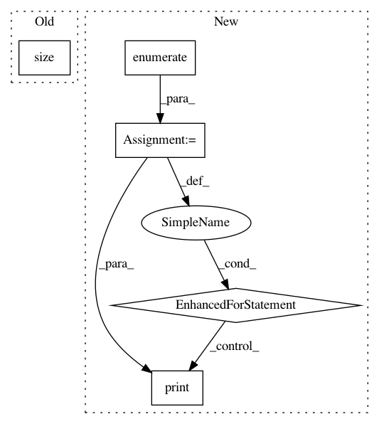

32c7386aef93737926069ee284d827f8e954e086,vae/main.py,,train,#Any#,104
Before Change
print("====> Epoch: {} Loss: {:.4f}".format(
epoch,
train_loss.data[0] / training_data.size(0)))
def test(epoch):
After Change
def train(epoch):
model.train()
train_loss = 0
for batch_idx, (data, _) in enumerate(train_loader):
data = Variable(data)
optimizer.zero_grad()
recon_batch, mu, logvar = model(data)
loss = loss_function(recon_batch, data, mu, logvar)
loss.backward()
train_loss += loss.data[0]
optimizer.step()
if batch_idx % args.log_interval == 0:
print("Train Epoch: {} [{}/{} ({:.0f}%)]\tLoss: {:.6f}".format(
epoch, batch_idx * len(data), len(train_loader.dataset),
100. * batch_idx / len(train_loader),
loss.data[0] / len(data)))
print("====> Epoch: {} Average loss: {:.4f}".format(
epoch, train_loss / len(train_loader.dataset)))
In pattern: SUPERPATTERN
Frequency: 3
Non-data size: 5
Instances
Project Name: OpenNMT/OpenNMT-py
Commit Name: 32c7386aef93737926069ee284d827f8e954e086
Time: 2017-01-17
Author: adam.paszke@gmail.com
File Name: vae/main.py
Class Name:
Method Name: train
Project Name: rusty1s/pytorch_geometric
Commit Name: 3e11eb52b9b370bf9df6bf396e91ef94bf4055b8
Time: 2017-11-02
Author: matthias.fey@tu-dortmund.de
File Name: examples/mnist_superpixel_75.py
Class Name:
Method Name: